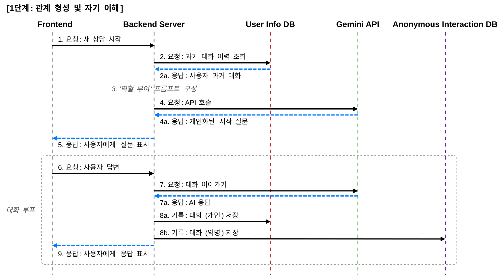
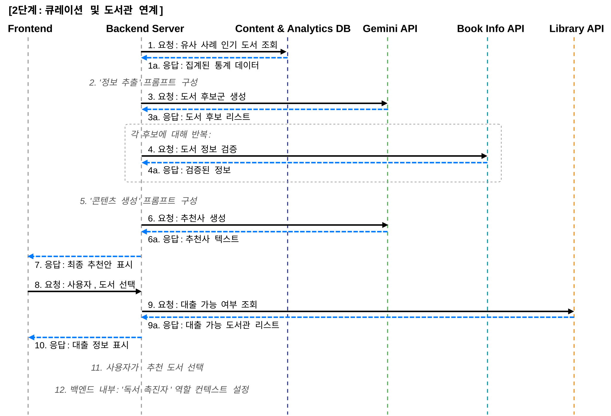
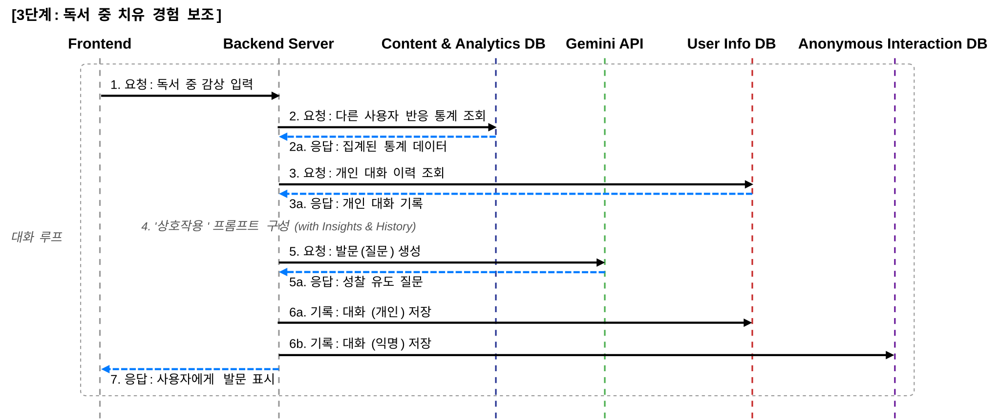
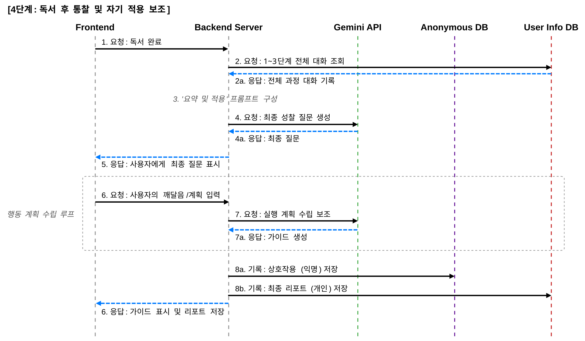

정서 지원을 위한 AI 기반 치유형 독서 가이드 프로세스 설계
Designing an AI-Based Therapeutic Reading Guide Process for Emotional Support
[그림 1] 3-Tier 시스템 아키텍처 및 범례

[그림 2-5] 단계별 서비스 흐름도
[그림 2] 1단계: 상담의 구조화 및 자기 이해

[그림 3] 2단계: 도서 큐레이션 및 도서관 연계

[그림 4] 3단계: 독서 중 치유 경험 보조

[그림 5] 4단계: 독서 후 적용 보조 및 사용자 리포트
